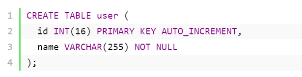

<link rel="stylesheet" href="home.css">
<!-- CSS only -->
<link rel="stylesheet" href="https://stackpath.bootstrapcdn.com/bootstrap/4.5.0/css/bootstrap.min.css"
  integrity="sha384-9aIt2nRpC12Uk9gS9baDl411NQApFmC26EwAOH8WgZl5MYYxFfc+NcPb1dKGj7Sk" crossorigin="anonymous">

<!-- JS, Popper.js, and jQuery -->
<script src="https://code.jquery.com/jquery-3.5.1.slim.min.js"
  integrity="sha384-DfXdz2htPH0lsSSs5nCTpuj/zy4C+OGpamoFVy38MVBnE+IbbVYUew+OrCXaRkfj" crossorigin="anonymous"></script>
<script src="https://cdn.jsdelivr.net/npm/popper.js@1.16.0/dist/umd/popper.min.js"
  integrity="sha384-Q6E9RHvbIyZFJoft+2mJbHaEWldlvI9IOYy5n3zV9zzTtmI3UksdQRVvoxMfooAo" crossorigin="anonymous"></script>
<script src="https://stackpath.bootstrapcdn.com/bootstrap/4.5.0/js/bootstrap.min.js"
  integrity="sha384-OgVRvuATP1z7JjHLkuOU7Xw704+h835Lr+6QL9UvYjZE3Ipu6Tp75j7Bh/kR0JKI" crossorigin="anonymous"></script>
<header>
  <div class="header-banner">
    <h1>Suyash 17BLC1041</h1>
  </div>
  <div class="clear"></div>
  <nav>
    <div class="site-title">17BLC1041</div>
    <ul>
      <li><a href="index.html">HOME</a></li>
      <li><a href="dml.html">DML</a></li>
      <li><a href="ddl.html">DDL</a></li>
      <li><a href="exit.html">Assignment Details</a></li>
      <ul>
  </nav>
</header>

<section class="content">
  <article>
    <p>
      Examples of DDL commands include create,drop , alter,truncate commands. DML component consists of SQL commands to
      manipulate data stored into database objects.
      DDL allows you to create SQL statements to make operations with database data structures (schemas, tables etc.).
    </p>
    <p>These are SQL DDL commands list and examples:</p>
    <h1>CREATE</h1>
    <p>
      CREATE statement is used to create a new database, table, index or stored procedure.
    </p>
    Creating a database
    
    <p>
      
    </p>
    <br></br>
    <h1>DROP</h1>
    <p>
      This is very important to know that once a table is deleted all the information available in the table is lost forever, so we have to be very careful when using this command.
    </p>
    Drop Database:
    
    <br>
    Drop table :
    <p>
      
    <p>
    <h1>ALTER</h1>
    <p>
      ALTER is used to modify existing database data structures (database, table).  
    </p>
    Alter table 
    
    </p><br>
    <br>
    
    <h1>TRUNCATE</h1>
    <p>
      TRUNCATE operation is used to delete all table records.
      <br>
      Logically it’s the same as DELETE command.
      <br>
      Differences between DELETE and TRUNCATE commands are:
    <br>
    <li>TRUNCATE is really faster</li>
      <li> TRUNCATE cannot be rolled back</li>
      <li>TRUNCATE command does not invoke ON DELETE triggers</li>
    
    </p>

    
  <footer>
    <article>Assignment submitted by</article>
    <li>
      Suyash Chamarthy  17BLC1041
    </li>
    <li>G1 Slot         Database management System</li>
  <footer>
  </article>

  <aside>

    </img>
    </img>
    <p> </p>
    learn about:

    <a href="index.html#ddl"><Strong>
        <li>DDL</li>
      </Strong> </a>
    <a href="index.html#dml"><Strong>
        <li>DML</li>
      </Strong></a>
    <a href="index.html#dql"><Strong>
        <li>DQL</li>
      </Strong></a>
    <a href="index.html#dcl"><Strong>
        <li>DCL</li>
      </Strong></a>
    <a href="index.html#tcl"><Strong>
        <li>TCL</li>
      </Strong></a>
  </aside>
  <button onclick="topFunction()" id="myBtn" title="Go to top">UP</button>
</section>
<script src="home.js"></script>
